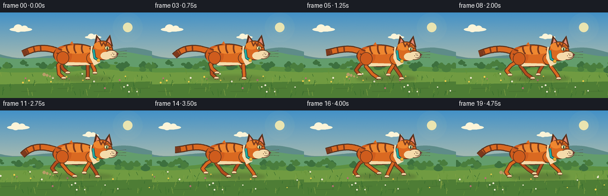
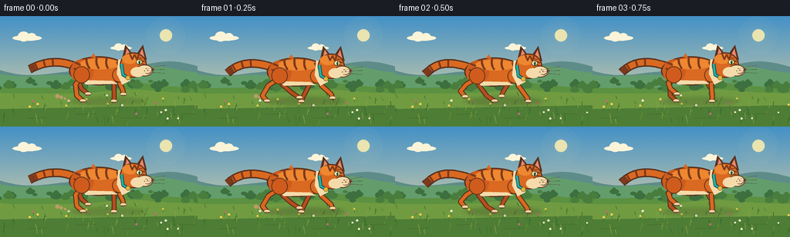

CODING AGENTS AS PIXEL WORLD MODELS
traex/GPT-5.6-Sol · instance_preservation_0003
点击播放 · 原生 RGB 像素
逐轮保存的候选
回放视频、检查图与代码变化。
每份候选均可单独播放。实际图片检查记录在下方工具轨迹中。
候选 01播放与检查图
点击播放 · 原生 RGB 像素

展开代码变化
--- 上一保存版本
+++ 本次保存版本
@@ -0,0 +1,309 @@
+from pathlib import Path
+import math
+import json
+import numpy as np
+from PIL import Image, ImageDraw, ImageFilter
+import artifact_io
+
+# Deterministic, text-only procedural animation.
+CASE_DIR = Path(__file__).resolve().parent
+spec = json.loads((CASE_DIR / "task_spec.json").read_text())
+W, H = spec["width"], spec["height"]
+N, FPS = spec["frames"], spec["fps"]
+S = 4
+rng = np.random.default_rng(240531)
+
+# Persistent world-space scenery: nothing is resampled frame-to-frame.
+grass = []
+for _ in range(170):
+ x = rng.uniform(-80, 520)
+ y = rng.uniform(101, 143)
+ h = rng.uniform(2.5, 10.5) * (0.55 + (y - 96) / 55)
+ lean = rng.uniform(-2.8, 2.8)
+ tone = int(rng.integers(0, 4))
+ grass.append((x, y, h, lean, tone))
+flowers = []
+for _ in range(31):
+ flowers.append((rng.uniform(-60, 500), rng.uniform(105, 139), rng.choice([0, 1, 2]), rng.uniform(.7, 1.25)))
+shrubs = [(rng.uniform(-40, 520), rng.uniform(84, 97), rng.uniform(3, 8)) for _ in range(52)]
+
+
+def ellipse(draw, box, fill, outline=None, width=1):
+ b = tuple(int(round(v * S)) for v in box)
+ draw.ellipse(b, fill=fill, outline=outline, width=max(1, int(width * S)))
+
+
+def polygon(draw, pts, fill):
+ draw.polygon([(int(round(x*S)), int(round(y*S))) for x, y in pts], fill=fill)
+
+
+def line(draw, pts, fill, width, joint="curve"):
+ draw.line([(int(round(x*S)), int(round(y*S))) for x, y in pts], fill=fill,
+ width=max(1, int(round(width*S))), joint=joint)
+
+
+def bezier_points(p0, p1, p2, p3, steps=28):
+ out = []
+ for t in np.linspace(0, 1, steps):
+ u = 1-t
+ out.append((u**3*p0[0] + 3*u*u*t*p1[0] + 3*u*t*t*p2[0] + t**3*p3[0],
+ u**3*p0[1] + 3*u*u*t*p1[1] + 3*u*t*t*p2[1] + t**3*p3[1]))
+ return out
+
+
+def hill_y(world_x, base, a1, a2):
+ return base + a1*math.sin(world_x/37.0) + a2*math.sin(world_x/17.0 + 1.1)
+
+
+def draw_background(frame_i):
+ # Rich but quiet late-afternoon gradient.
+ hh, ww = H*S, W*S
+ top = np.array([67, 145, 199], dtype=float)
+ bottom = np.array([246, 220, 158], dtype=float)
+ y = np.linspace(0, 1, hh)[:, None, None]
+ arr = np.broadcast_to(top[None, None, :]*(1-y) + bottom[None, None, :]*y, (hh, ww, 3)).copy()
+ # Stable fine grain avoids flat computer color without temporal shimmer.
+ grain = np.random.default_rng(91).normal(0, .55, (hh, ww, 1))
+ arr = np.clip(arr + grain, 0, 255).astype(np.uint8)
+ im = Image.fromarray(arr, "RGB")
+ d = ImageDraw.Draw(im)
+
+ # Sun haze and disk.
+ haze = Image.new("RGBA", im.size, (0, 0, 0, 0))
+ hd = ImageDraw.Draw(haze)
+ for r, a in [(25, 8), (18, 11), (12, 16)]:
+ ellipse(hd, (215-r, 25-r, 215+r, 25+r), (255, 239, 173, a))
+ ellipse(hd, (207, 17, 223, 33), (255, 239, 174, 220))
+ im = Image.alpha_composite(im.convert("RGBA"), haze).convert("RGB")
+ d = ImageDraw.Draw(im)
+
+ # Soft clouds with slow sky parallax.
+ cloud_shift = frame_i * 0.38
+ for cx, cy, scale, alpha in [(34, 25, 1.0, 145), (156, 39, .72, 105), (292, 20, .92, 120)]:
+ x = cx-cloud_shift
+ col = (252, 244, 216)
+ ellipse(d, (x-18*scale, cy, x+20*scale, cy+7*scale), col)
+ ellipse(d, (x-11*scale, cy-5*scale, x+4*scale, cy+8*scale), col)
+ ellipse(d, (x+1*scale, cy-3*scale, x+13*scale, cy+7*scale), col)
+
+ # Distant blue ridge; camera parallax is deliberately subtle.
+ pan = frame_i * 8.0
+ pts = []
+ for x in range(-8, W+9, 4):
+ wx = x + pan*0.12
+ yy = 69 + 7*math.sin(wx/45) + 3.2*math.sin(wx/21 + .4)
+ pts.append((x, yy))
+ polygon(d, pts + [(W+8, 103), (-8, 103)], (94, 140, 137))
+ # Highlight ridge.
+ ridge = [(x, 73 + 6*math.sin((x+pan*.18)/43) + 2.5*math.sin((x+pan*.18)/19+1)) for x in range(-8, W+9, 4)]
+ polygon(d, ridge + [(W+8, 110), (-8, 110)], (99, 157, 108))
+
+ # Mid meadow, with gentle wave-shaped contour.
+ mid = [(x, hill_y(x+pan*.42, 91, 3.3, 1.2)) for x in range(-8, W+9, 4)]
+ polygon(d, mid + [(W+8, H+2), (-8, H+2)], (92, 145, 65))
+ # Sunlit middle strip.
+ strip = [(x, hill_y(x+pan*.55, 99, 2.6, .8)) for x in range(-8, W+9, 4)]
+ polygon(d, strip + [(W+8, H+2), (-8, H+2)], (112, 155, 65))
+ # Foreground deepens toward bottom.
+ polygon(d, [(-2, 121), (W+2, 116), (W+2, H+2), (-2, H+2)], (78, 125, 53))
+
+ # Distant bushes/seed heads move slower than foreground.
+ for wx, yy, r in shrubs:
+ x = wx - pan*.47
+ if -12 <= x <= W+12:
+ col = (61, 112, 62) if int(wx*11) % 2 else (73, 125, 61)
+ ellipse(d, (x-r, yy-r*.55, x+r, yy+r*.65), col)
+ if r > 5.5:
+ ellipse(d, (x-r*.5, yy-r*.9, x+r*.5, yy+r*.2), col)
+
+ # Ground shadow bands convey horizontal speed without obscuring the cat.
+ for k in range(6):
+ x = ((k*61 - pan*1.08 + 35) % 370) - 60
+ line(d, [(x, 128+k%2*5), (x+22+k*3, 128+k%2*5-1)], (68, 111, 48), 1.1)
+
+ grass_cols = [(49, 103, 43), (64, 118, 46), (100, 146, 54), (131, 161, 67)]
+ for wx, yy, gh, lean, tone in grass:
+ x = wx-pan
+ if -5 <= x <= W+5:
+ col = grass_cols[tone]
+ line(d, [(x, yy), (x+lean, yy-gh)], col, .72)
+ if gh > 7:
+ line(d, [(x+lean*.5, yy-gh*.48), (x+lean+2.1, yy-gh*.72)], col, .5)
+
+ flower_cols = [(245, 208, 77), (239, 232, 207), (188, 111, 117)]
+ for wx, yy, typ, scale in flowers:
+ x = wx-pan
+ if -4 <= x <= W+4:
+ line(d, [(x, yy), (x+.5, yy-5*scale)], (55, 105, 43), .6)
+ c = flower_cols[int(typ)]
+ rr = 1.25*scale
+ ellipse(d, (x-rr, yy-5*scale-rr, x+rr, yy-5*scale+rr), c)
+ return im
+
+
+def draw_limb(draw, anchor, q, kind, color, outline, near=True, yoff=0):
+ ax, ay = anchor[0], anchor[1]+yoff
+ swing = math.sin(q)
+ # Forward recovery is airborne; backward sweep contacts the ground.
+ lift = 9.0 * max(0.0, math.cos(q))**0.75
+ if kind == "front":
+ ex = ax + 18.5*swing
+ ey = 111.0 + yoff*.22 - lift
+ knee = (ax + 5.7*swing - 2.5, ay + 14.0 - lift*.12)
+ wrist = (ex - 2.3*swing, ey-5.2)
+ pts = [(ax, ay), knee, wrist, (ex, ey)]
+ else:
+ ex = ax + 21.5*swing
+ ey = 110.5 + yoff*.22 - lift
+ # Folded feline hock gives hind legs their characteristic zig-zag.
+ knee = (ax - 10.0 + 8.0*swing, ay + 11.5 - lift*.20)
+ hock = (ex - 8.0 - 2.5*swing, ey - 7.0)
+ pts = [(ax, ay), knee, hock, (ex, ey)]
+ line(draw, pts, outline, 7.0 if near else 6.4)
+ line(draw, pts, color, 4.6 if near else 4.0)
+ # Cream toe cap and tiny dark contact line, fixed identity feature.
+ ellipse(draw, (ex-4.0, ey-2.5, ex+4.5, ey+2.3), (242, 215, 164), outline, .65)
+ line(draw, [(ex-2.5, ey+1.4), (ex+4, ey+1.4)], (101, 62, 38), .7)
+ return ex, ey, lift
+
+
+def draw_cat(im, frame_i):
+ d = ImageDraw.Draw(im)
+ phase = 2*math.pi*frame_i/6.0
+ # Camera follows the cat. Small physical bob/surge remains visible.
+ cx = 0.9*math.sin(phase+.2)
+ bob = -2.0*(0.5 + 0.5*math.cos(2*phase)) + .3
+ yoff = bob
+
+ # Soft contact shadow changes subtly with airborne phase.
+ shadow = Image.new("RGBA", im.size, (0,0,0,0))
+ sd = ImageDraw.Draw(shadow)
+ airborne = .5+.5*math.cos(2*phase)
+ ellipse(sd, (88+cx+airborne*3, 106, 191+cx-airborne*3, 116), (50, 57, 35, 70-int(airborne*18)))
+ shadow = shadow.filter(ImageFilter.GaussianBlur(2.3*S))
+ im.paste(shadow, (0,0), shadow)
+ d = ImageDraw.Draw(im)
+
+ outline = (91, 49, 28)
+ orange = (218, 105, 33)
+ orange_hi = (238, 135, 48)
+ orange_shadow = (181, 75, 27)
+ far_orange = (181, 78, 29)
+ stripe = (124, 57, 29)
+ cream = (245, 219, 171)
+
+ # Dust motes appear only behind a pushing rear paw, spatially restrained.
+ push = max(0, -math.cos(phase+math.pi))
+ if push > .2:
+ for j in range(4):
+ rr = 1.1 + .55*j
+ x = 91+cx-j*5-push*2
+ yy = 109-j*1.6
+ ellipse(d, (x-rr, yy-rr, x+rr, yy+rr), (184, 157, 103))
+
+ # Far limbs are darkened, retaining unambiguous four-leg anatomy.
+ draw_limb(d, (151+cx, 77), phase+math.pi+.22, "front", far_orange, outline, False, yoff)
+ draw_limb(d, (111+cx, 78), phase+.12, "hind", far_orange, outline, False, yoff)
+
+ # Long striped tail behind the body, animated as one coherent flexible shape.
+ root = (99+cx, 68+yoff)
+ wave = math.sin(phase*.72)
+ tail_pts = bezier_points(root, (77+cx, 58+yoff+3*wave),
+ (57+cx, 61+yoff-5*wave), (38+cx, 71+yoff+5*wave), 34)
+ line(d, tail_pts, outline, 11.5)
+ line(d, tail_pts, orange, 8.0)
+ # Stable tail bands sampled from the same curve every frame.
+ for idx in [16, 22, 28]:
+ p0, p1 = tail_pts[idx-1], tail_pts[idx+1]
+ vx, vy = p1[0]-p0[0], p1[1]-p0[1]
+ mag = max(.01, math.hypot(vx, vy))
+ nx, ny = -vy/mag, vx/mag
+ p = tail_pts[idx]
+ line(d, [(p[0]-nx*4.1, p[1]-ny*4.1), (p[0]+nx*4.1, p[1]+ny*4.1)], stripe, 2.5)
+ # Dark tail tip.
+ line(d, tail_pts[-5:], stripe, 7.7)
+
+ # Main torso silhouette: robust and identical across poses.
+ ellipse(d, (89+cx, 54+yoff, 166+cx, 92+yoff), orange, outline, 1.8)
+ ellipse(d, (91+cx, 58+yoff, 121+cx, 89+yoff), (207, 92, 29))
+ # Dorsal sunlight and cream belly accent.
+ ellipse(d, (103+cx, 57+yoff, 155+cx, 71+yoff), orange_hi)
+ polygon(d, [(105+cx,85+yoff),(145+cx,86+yoff),(153+cx,90+yoff),(111+cx,91+yoff)], cream)
+
+ # Tabby body markings always remain on the same animal/body locations.
+ for x, tilt in [(112, 1), (125, 0), (138, -1)]:
+ pts = bezier_points((x+cx, 56+yoff), (x-1+cx, 61+yoff),
+ (x+tilt+cx, 66+yoff), (x+3+tilt+cx, 70+yoff), 10)
+ line(d, pts, stripe, 2.8)
+ # Rump bars.
+ line(d, [(97+cx,62+yoff),(104+cx,65+yoff)], stripe, 2.4)
+ line(d, [(95+cx,70+yoff),(103+cx,72+yoff)], stripe, 2.2)
+
+ # Near limbs overlap torso naturally at their anchors.
+ front_paw = draw_limb(d, (157+cx, 77), phase+.12, "front", orange, outline, True, yoff)
+ hind_paw = draw_limb(d, (108+cx, 79), phase+math.pi+.05, "hind", orange, outline, True, yoff)
+ # Shoulder and thigh overlays connect limbs smoothly to torso.
+ ellipse(d, (145+cx, 69+yoff, 164+cx, 88+yoff), orange, outline, 1.2)
+ ellipse(d, (95+cx, 67+yoff, 116+cx, 89+yoff), (207, 92, 29), outline, 1.0)
+ # Repaint small upper-body marking/details after limb overlays.
+ line(d, [(151+cx,61+yoff),(154+cx,68+yoff)], stripe, 2.3)
+
+ # Neck/chest cream bib under the head.
+ polygon(d, [(153+cx,58+yoff),(170+cx,61+yoff),(168+cx,86+yoff),
+ (158+cx,91+yoff),(151+cx,77+yoff)], cream)
+
+ # Ears behind the head, with warm pink interiors.
+ polygon(d, [(158+cx,57+yoff),(162+cx,39+yoff),(174+cx,54+yoff)], outline)
+ polygon(d, [(162+cx,53+yoff),(164+cx,44+yoff),(170+cx,53+yoff)], (232, 137, 111))
+ polygon(d, [(176+cx,52+yoff),(185+cx,39+yoff),(190+cx,59+yoff)], outline)
+ polygon(d, [(180+cx,52+yoff),(184+cx,44+yoff),(187+cx,56+yoff)], (232, 137, 111))
+
+ # Head and cheek/muzzle profile.
+ ellipse(d, (155+cx, 49+yoff, 190+cx, 82+yoff), orange, outline, 1.7)
+ ellipse(d, (158+cx, 51+yoff, 178+cx, 64+yoff), orange_hi)
+ ellipse(d, (176+cx, 65+yoff, 198+cx, 80+yoff), cream, outline, 1.1)
+ ellipse(d, (169+cx, 68+yoff, 187+cx, 81+yoff), cream)
+
+ # Forehead M and cheek bars preserve recognizable tabby identity.
+ line(d, [(168+cx,51+yoff),(171+cx,58+yoff),(174+cx,52+yoff),(177+cx,58+yoff),(180+cx,51+yoff)], stripe, 2.0)
+ line(d, [(181+cx,59+yoff),(187+cx,61+yoff)], stripe, 1.7)
+ line(d, [(181+cx,63+yoff),(188+cx,65+yoff)], stripe, 1.5)
+
+ # Visible green eye with highlight and brow.
+ ellipse(d, (176+cx,58+yoff, 184+cx,65+yoff), (238, 230, 164), outline, .8)
+ ellipse(d, (179.3+cx,58.8+yoff, 181.5+cx,64.8+yoff), (43, 74, 49))
+ ellipse(d, (179.5+cx,59.1+yoff, 180.5+cx,60.2+yoff), (255,255,238))
+ line(d, [(175+cx,56+yoff),(184+cx,56.5+yoff)], stripe, 1.3)
+
+ # Nose, smile, whisker dots and clean whiskers.
+ polygon(d, [(196+cx,69+yoff),(200+cx,71+yoff),(196+cx,74+yoff)], (111, 55, 51))
+ line(d, [(196+cx,74+yoff),(192+cx,77+yoff),(188+cx,76+yoff)], (88, 53, 39), .75)
+ for xx, yy in [(189,70),(191,72),(187,73)]:
+ ellipse(d, (xx-.55+cx, yy-.55+yoff, xx+.55+cx, yy+.55+yoff), (117,78,54))
+ for dy, bend in [(-2,-2),(1,0),(4,2)]:
+ pts = bezier_points((190+cx,72+dy+yoff),(201+cx,70+dy+yoff),
+ (207+cx,70+dy+bend+yoff),(213+cx,70+dy+bend+yoff),10)
+ line(d, pts, (83,72,59), .55)
+
+ # Signature turquoise collar and round brass tag stay fixed in every frame.
+ line(d, [(157+cx,64+yoff),(159+cx,78+yoff),(166+cx,82+yoff)], (27, 78, 77), 4.5)
+ line(d, [(157+cx,64+yoff),(159+cx,78+yoff),(166+cx,82+yoff)], (35, 174, 166), 2.7)
+ ellipse(d, (162.5+cx,79+yoff,168.5+cx,85+yoff), (232, 180, 56), (104,74,34), .7)
+
+ # A few motion tufts on back, no detached outlines.
+ polygon(d, [(117+cx,55+yoff),(121+cx,50+yoff),(124+cx,56+yoff)], orange)
+ return im
+
+
+def make_frame(i):
+ im = draw_background(i)
+ im = draw_cat(im, i)
+ # Supersampled antialiasing is the key quality pass.
+ im = im.resize((W, H), Image.Resampling.LANCZOS).convert("RGB")
+ return np.asarray(im, dtype=np.uint8)
+
+
+frames = np.stack([make_frame(i) for i in range(N)], axis=0)
+assert frames.shape == (N, H, W, 3) and frames.dtype == np.uint8
+artifact_io.save(frames, CASE_DIR)
+print(f"saved {N} RGB frames at {W}x{H}, {FPS:g} fps")
候选 02播放与检查图
点击播放 · 原生 RGB 像素


展开代码变化
--- 上一保存版本
+++ 本次保存版本
@@ -65,7 +65,7 @@
# Stable fine grain avoids flat computer color without temporal shimmer.
grain = np.random.default_rng(91).normal(0, .55, (hh, ww, 1))
arr = np.clip(arr + grain, 0, 255).astype(np.uint8)
- im = Image.fromarray(arr, "RGB")
+ im = Image.fromarray(arr)
d = ImageDraw.Draw(im)
# Sun haze and disk.
可观测工具轨迹
实际执行的命令与返回图片。
命令 1exit 0
/bin/bash -lc 'cat prompt.txt'
命令 2exit 0
/bin/bash -lc 'cat GENERATION_RULES.md'
命令 3exit 0
/bin/bash -lc "cat task_spec.json && printf '\\n---FILES---\\n' && find . -maxdepth 2 -type f -printf '%p\\n' | sort"
命令 4exit 0
/bin/bash -lc "sed -n '1,240p' artifact_io.py"
命令 5exit 0
/bin/bash -lc "cat > generate.py <<'PY'
from pathlib import Path
import math
import json
import numpy as np
from PIL import Image, ImageDraw, ImageFilter
import artifact_io
# Deterministic, text-only procedural animation.
CASE_DIR = Path(__file__).resolve().parent
spec = json.loads((CASE_DIR / \"task_spec.json\").read_text())
W, H = spec[\"width\"], spec[\"height\"]
N, FPS = spec[\"frames\"], spec[\"fps\"]
S = 4
rng = np.random.default_rng(240531)
# Persistent world-space scenery: nothing is resampled frame-to-frame.
grass = []
for _ in range(170):
x = rng.uniform(-80, 520)
y = rng.uniform(101, 143)
h = rng.uniform(2.5, 10.5) * (0.55 + (y - 96) / 55)
lean = rng.uniform(-2.8, 2.8)
tone = int(rng.integers(0, 4))
grass.append((x, y, h, lean, tone))
flowers = []
for _ in range(31):
flowers.append((rng.uniform(-60, 500), rng.uniform(105, 139), rng.choice([0, 1, 2]), rng.uniform(.7, 1.25)))
shrubs = [(rng.uniform(-40, 520), rng.uniform(84, 97), rng.uniform(3, 8)) for _ in range(52)]
def ellipse(draw, box, fill, outline=None, width=1):
b = tuple(int(round(v * S)) for v in box)
draw.ellipse(b, fill=fill, outline=outline, width=max(1, int(width * S)))
def polygon(draw, pts, fill):
draw.polygon([(int(round(x*S)), int(round(y*S))) for x, y in pts], fill=fill)
def line(draw, pts, fill, width, joint=\"curve\"):
draw.line([(int(round(x*S)), int(round(y*S))) for x, y in pts], fill=fill,
width=max(1, int(round(width*S))), joint=joint)
def bezier_points(p0, p1, p2, p3, steps=28):
out = []
for t in np.linspace(0, 1, steps):
u = 1-t
out.append((u**3*p0[0] + 3*u*u*t*p1[0] + 3*u*t*t*p2[0] + t**3*p3[0],
u**3*p0[1] + 3*u*u*t*p1[1] + 3*u*t*t*p2[1] + t**3*p3[1]))
return out
def hill_y(world_x, base, a1, a2):
return base + a1*math.sin(world_x/37.0) + a2*math.sin(world_x/17.0 + 1.1)
def draw_background(frame_i):
# Rich but quiet late-afternoon gradient.
hh, ww = H*S, W*S
top = np.array([67, 145, 199], dtype=float)
bottom = np.array([246, 220, 158], dtype=float)
y = np.linspace(0, 1, hh)[:, None, None]
arr = np.broadcast_to(top[None, None, :]*(1-y) + bottom[None, None, :]*y, (hh, ww, 3)).copy()
# Stable fine grain avoids flat computer color without temporal shimmer.
grain = np.random.default_rng(91).normal(0, .55, (hh, ww, 1))
arr = np.clip(arr + grain, 0, 255).astype(np.uint8)
im = Image.fromarray(arr, \"RGB\")
d = ImageDraw.Draw(im)
# Sun haze and disk.
haze = Image.new(\"RGBA\", im.size, (0, 0, 0, 0))
hd = ImageDraw.Draw(haze)
for r, a in [(25, 8), (18, 11), (12, 16)]:
ellipse(hd, (215-r, 25-r, 215+r, 25+r), (255, 239, 173, a))
ellipse(hd, (207, 17, 223, 33), (255, 239, 174, 220))
im = Image.alpha_composite(im.convert(\"RGBA\"), haze).convert(\"RGB\")
d = ImageDraw.Draw(im)
# Soft clouds with slow sky parallax.
cloud_shift = frame_i * 0.38
for cx, cy, scale, alpha in [(34, 25, 1.0, 145), (156, 39, .72, 105), (292, 20, .92, 120)]:
x = cx-cloud_shift
col = (252, 244, 216)
ellipse(d, (x-18*scale, cy, x+20*scale, cy+7*scale), col)
ellipse(d, (x-11*scale, cy-5*scale, x+4*scale, cy+8*scale), col)
ellipse(d, (x+1*scale, cy-3*scale, x+13*scale, cy+7*scale), col)
# Distant blue ridge; camera parallax is deliberately subtle.
pan = frame_i * 8.0
pts = []
for x in range(-8, W+9, 4):
wx = x + pan*0.12
yy = 69 + 7*math.sin(wx/45) + 3.2*math.sin(wx/21 + .4)
pts.append((x, yy))
polygon(d, pts + [(W+8, 103), (-8, 103)], (94, 140, 137))
# Highlight ridge.
ridge = [(x, 73 + 6*math.sin((x+pan*.18)/43) + 2.5*math.sin((x+pan*.18)/19+1)) for x in range(-8, W+9, 4)]
polygon(d, ridge + [(W+8, 110), (-8, 110)], (99, 157, 108))
# Mid meadow, with gentle wave-shaped contour.
mid = [(x, hill_y(x+pan*.42, 91, 3.3, 1.2)) for x in range(-8, W+9, 4)]
polygon(d, mid + [(W+8, H+2), (-8, H+2)], (92, 145, 65))
# Sunlit middle strip.
strip = [(x, hill_y(x+pan*.55, 99, 2.6, .8)) for x in range(-8, W+9, 4)]
polygon(d, strip + [(W+8, H+2), (-8, H+2)], (112, 155, 65))
# Foreground deepens toward bottom.
polygon(d, [(-2, 121), (W+2, 116), (W+2, H+2), (-2, H+2)], (78, 125, 53))
# Distant bushes/seed heads move slower than foreground.
for wx, yy, r in shrubs:
x = wx - pan*.47
if -12 <= x <= W+12:
col = (61, 112, 62) if int(wx*11) % 2 else (73, 125, 61)
ellipse(d, (x-r, yy-r*.55, x+r, yy+r*.65), col)
if r > 5.5:
ellipse(d, (x-r*.5, yy-r*.9, x+r*.5, yy+r*.2), col)
# Ground shadow bands convey horizontal speed without obscuring the cat.
for k in range(6):
x = ((k*61 - pan*1.08 + 35) % 370) - 60
line(d, [(x, 128+k%2*5), (x+22+k*3, 128+k%2*5-1)], (68, 111, 48), 1.1)
grass_cols = [(49, 103, 43), (64, 118, 46), (100, 146, 54), (131, 161, 67)]
for wx, yy, gh, lean, tone in grass:
x = wx-pan
if -5 <= x <= W+5:
col = grass_cols[tone]
line(d, [(x, yy), (x+lean, yy-gh)], col, .72)
if gh > 7:
line(d, [(x+lean*.5, yy-gh*.48), (x+lean+2.1, yy-gh*.72)], col, .5)
flower_cols = [(245, 208, 77), (239, 232, 207), (188, 111, 117)]
for wx, yy, typ, scale in flowers:
x = wx-pan
if -4 <= x <= W+4:
line(d, [(x, yy), (x+.5, yy-5*scale)], (55, 105, 43), .6)
c = flower_cols[int(typ)]
rr = 1.25*scale
ellipse(d, (x-rr, yy-5*scale-rr, x+rr, yy-5*scale+rr), c)
return im
def draw_limb(draw, anchor, q, kind, color, outline, near=True, yoff=0):
ax, ay = anchor[0], anchor[1]+yoff
swing = math.sin(q)
# Forward recovery is airborne; backward sweep contacts the ground.
lift = 9.0 * max(0.0, math.cos(q))**0.75
if kind == \"front\":
ex = ax + 18.5*swing
ey = 111.0 + yoff*.22 - lift
knee = (ax + 5.7*swing - 2.5, ay + 14.0 - lift*.12)
wrist = (ex - 2.3*swing, ey-5.2)
pts = [(ax, ay), knee, wrist, (ex, ey)]
else:
ex = ax + 21.5*swing
ey = 110.5 + yoff*.22 - lift
# Folded feline hock gives hind legs their characteristic zig-zag.
knee = (ax - 10.0 + 8.0*swing, ay + 11.5 - lift*.20)
hock = (ex - 8.0 - 2.5*swing, ey - 7.0)
pts = [(ax, ay), knee, hock, (ex, ey)]
line(draw, pts, outline, 7.0 if near else 6.4)
line(draw, pts, color, 4.6 if near else 4.0)
# Cream toe cap and tiny dark contact line, fixed identity feature.
ellipse(draw, (ex-4.0, ey-2.5, ex+4.5, ey+2.3), (242, 215, 164), outline, .65)
line(draw, [(ex-2.5, ey+1.4), (ex+4, ey+1.4)], (101, 62, 38), .7)
return ex, ey, lift
def draw_cat(im, frame_i):
d = ImageDraw.Draw(im)
phase = 2*math.pi*frame_i/6.0
# Camera follows the cat. Small physical bob/surge remains visible.
cx = 0.9*math.sin(phase+.2)
bob = -2.0*(0.5 + 0.5*math.cos(2*phase)) + .3
yoff = bob
# Soft contact shadow changes subtly with airborne phase.
shadow = Image.new(\"RGBA\", im.size, (0,0,0,0))
sd = ImageDraw.Draw(shadow)
airborne = .5+.5*math.cos(2*phase)
ellipse(sd, (88+cx+airborne*3, 106, 191+cx-airborne*3, 116), (50, 57, 35, 70-int(airborne*18)))
shadow = shadow.filter(ImageFilter.GaussianBlur(2.3*S))
im.paste(shadow, (0,0), shadow)
d = ImageDraw.Draw(im)
outline = (91, 49, 28)
orange = (218, 105, 33)
orange_hi = (238, 135, 48)
orange_shadow = (181, 75, 27)
far_orange = (181, 78, 29)
stripe = (124, 57, 29)
cream = (245, 219, 171)
# Dust motes appear only behind a pushing rear paw, spatially restrained.
push = max(0, -math.cos(phase+math.pi))
if push > .2:
for j in range(4):
rr = 1.1 + .55*j
x = 91+cx-j*5-push*2
yy = 109-j*1.6
ellipse(d, (x-rr, yy-rr, x+rr, yy+rr), (184, 157, 103))
# Far limbs are darkened, retaining unambiguous four-leg anatomy.
draw_limb(d, (151+cx, 77), phase+math.pi+.22, \"front\", far_orange, outline, False, yoff)
draw_limb(d, (111+cx, 78), phase+.12, \"hind\", far_orange, outline, False, yoff)
# Long striped tail behind the body, animated as one coherent flexible shape.
root = (99+cx, 68+yoff)
wave = math.sin(phase*.72)
tail_pts = bezier_points(root, (77+cx, 58+yoff+3*wave),
(57+cx, 61+yoff-5*wave), (38+cx, 71+yoff+5*wave), 34)
line(d, tail_pts, outline, 11.5)
line(d, tail_pts, orange, 8.0)
# Stable tail bands sampled from the same curve every frame.
for idx in [16, 22, 28]:
p0, p1 = tail_pts[idx-1], tail_pts[idx+1]
vx, vy = p1[0]-p0[0], p1[1]-p0[1]
mag = max(.01, math.hypot(vx, vy))
nx, ny = -vy/mag, vx/mag
p = tail_pts[idx]
line(d, [(p[0]-nx*4.1, p[1]-ny*4.1), (p[0]+nx*4.1, p[1]+ny*4.1)], stripe, 2.5)
# Dark tail tip.
line(d, tail_pts[-5:], stripe, 7.7)
# Main torso silhouette: robust and identical across poses.
ellipse(d, (89+cx, 54+yoff, 166+cx, 92+yoff), orange, outline, 1.8)
ellipse(d, (91+cx, 58+yoff, 121+cx, 89+yoff), (207, 92, 29))
# Dorsal sunlight and cream belly accent.
ellipse(d, (103+cx, 57+yoff, 155+cx, 71+yoff), orange_hi)
polygon(d, [(105+cx,85+yoff),(145+cx,86+yoff),(153+cx,90+yoff),(111+cx,91+yoff)], cream)
# Tabby body markings always remain on the same animal/body locations.
for x, tilt in [(112, 1), (125, 0), (138, -1)]:
pts = bezier_points((x+cx, 56+yoff), (x-1+cx, 61+yoff),
(x+tilt+cx, 66+yoff), (x+3+tilt+cx, 70+yoff), 10)
line(d, pts, stripe, 2.8)
# Rump bars.
line(d, [(97+cx,62+yoff),(104+cx,65+yoff)], stripe, 2.4)
line(d, [(95+cx,70+yoff),(103+cx,72+yoff)], stripe, 2.2)
# Near limbs overlap torso naturally at their anchors.
front_paw = draw_limb(d, (157+cx, 77), phase+.12, \"front\", orange, outline, True, yoff)
hind_paw = draw_limb(d, (108+cx, 79), phase+math.pi+.05, \"hind\", orange, outline, True, yoff)
# Shoulder and thigh overlays connect limbs smoothly to torso.
ellipse(d, (145+cx, 69+yoff, 164+cx, 88+yoff), orange, outline, 1.2)
ellipse(d, (95+cx, 67+yoff, 116+cx, 89+yoff), (207, 92, 29), outline, 1.0)
# Repaint small upper-body marking/details after limb overlays.
line(d, [(151+cx,61+yoff),(154+cx,68+yoff)], stripe, 2.3)
# Neck/chest cream bib under the head.
polygon(d, [(153+cx,58+yoff),(170+cx,61+yoff),(168+cx,86+yoff),
(158+cx,91+yoff),(151+cx,77+yoff)], cream)
# Ears behind the head, with warm pink interiors.
polygon(d, [(158+cx,57+yoff),(162+cx,39+yoff),(174+cx,54+yoff)], outline)
polygon(d, [(162+cx,53+yoff),(164+cx,44+yoff),(170+cx,53+yoff)], (232, 137, 111))
polygon(d, [(176+cx,52+yoff),(185+cx,39+yoff),(190+cx,59+yoff)], outline)
polygon(d, [(180+cx,52+yoff),(184+cx,44+yoff),(187+cx,56+yoff)], (232, 137, 111))
# Head and cheek/muzzle profile.
ellipse(d, (155+cx, 49+yoff, 190+cx, 82+yoff), orange, outline, 1.7)
ellipse(d, (158+cx, 51+yoff, 178+cx, 64+yoff), orange_hi)
ellipse(d, (176+cx, 65+yoff, 198+cx, 80+yoff), cream, outline, 1.1)
ellipse(d, (169+cx, 68+yoff, 187+cx, 81+yoff), cream)
# Forehead M and cheek bars preserve recognizable tabby identity.
line(d, [(168+cx,51+yoff),(171+cx,58+yoff),(174+cx,52+yoff),(177+cx,58+yoff),(180+cx,51+yoff)], stripe, 2.0)
line(d, [(181+cx,59+yoff),(187+cx,61+yoff)], stripe, 1.7)
line(d, [(181+cx,63+yoff),(188+cx,65+yoff)], stripe, 1.5)
# Visible green eye with highlight and brow.
ellipse(d, (176+cx,58+yoff, 184+cx,65+yoff), (238, 230, 164), outline, .8)
ellipse(d, (179.3+cx,58.8+yoff, 181.5+cx,64.8+yoff), (43, 74, 49))
ellipse(d, (179.5+cx,59.1+yoff, 180.5+cx,60.2+yoff), (255,255,238))
line(d, [(175+cx,56+yoff),(184+cx,56.5+yoff)], stripe, 1.3)
# Nose, smile, whisker dots and clean whiskers.
polygon(d, [(196+cx,69+yoff),(200+cx,71+yoff),(196+cx,74+yoff)], (111, 55, 51))
line(d, [(196+cx,74+yoff),(192+cx,77+yoff),(188+cx,76+yoff)], (88, 53, 39), .75)
for xx, yy in [(189,70),(191,72),(187,73)]:
ellipse(d, (xx-.55+cx, yy-.55+yoff, xx+.55+cx, yy+.55+yoff), (117,78,54))
for dy, bend in [(-2,-2),(1,0),(4,2)]:
pts = bezier_points((190+cx,72+dy+yoff),(201+cx,70+dy+yoff),
(207+cx,70+dy+bend+yoff),(213+cx,70+dy+bend+yoff),10)
line(d, pts, (83,72,59), .55)
# Signature turquoise collar and round brass tag stay fixed in every frame.
line(d, [(157+cx,64+yoff),(159+cx,78+yoff),(166+cx,82+yoff)], (27, 78, 77), 4.5)
line(d, [(157+cx,64+yoff),(159+cx,78+yoff),(166+cx,82+yoff)], (35, 174, 166), 2.7)
ellipse(d, (162.5+cx,79+yoff,168.5+cx,85+yoff), (232, 180, 56), (104,74,34), .7)
# A few motion tufts on back, no detached outlines.
polygon(d, [(117+cx,55+yoff),(121+cx,50+yoff),(124+cx,56+yoff)], orange)
return im
def make_frame(i):
im = draw_background(i)
im = draw_cat(im, i)
# Supersampled antialiasing is the key quality pass.
im = im.resize((W, H), Image.Resampling.LANCZOS).convert(\"RGB\")
return np.asarray(im, dtype=np.uint8)
frames = np.stack([make_frame(i) for i in range(N)], axis=0)
assert frames.shape == (N, H, W, 3) and frames.dtype == np.uint8
artifact_io.save(frames, CASE_DIR)
print(f\"saved {N} RGB frames at {W}x{H}, {FPS:g} fps\")
PY
python generate.py
ls -lh pixels.npz inspection.png transition_check.png index.html frames/00.png frames/19.png"命令 6exit 1
/bin/bash -lc "python - <<'PY'
from pathlib import Path
from PIL import Image
import numpy as np, hashlib, subprocess, sys
files=sorted(Path('frames').glob('*.png'))
assert len(files)==20
A=np.stack([np.asarray(Image.open(p).convert('RGB')) for p in files])
assert A.shape==(20,144,256,3) and A.dtype==np.uint8
mad=np.abs(A[1:].astype(np.int16)-A[:-1].astype(np.int16)).mean(axis=(1,2,3))
# Approximate orange-cat pixels: verifies one similarly sized orange subject in all frames.
r,g,b=A[...,0],A[...,1],A[...,2]
mask=(r>145)&(r>g*1.35)&(g>b*1.35)&(np.indices(r.shape)[1]<120)
counts=mask.sum(axis=(1,2))
print('shape/dtype:', A.shape, A.dtype)
print('adjacent MAD:', np.round(mad,2).tolist(), 'range', round(float(mad.min()),2), round(float(mad.max()),2))
print('orange subject pixel counts:', counts.tolist(), 'CV', round(float(counts.std()/counts.mean()),3))
print('unique frame hashes:', len({hashlib.sha256(x.tobytes()).hexdigest() for x in A}))
print('range:', int(A.min()), int(A.max()), 'mean:', round(float(A.mean()),2))
# Artifact decode contract.
z=np.load('pixels.npz')['pixels']
assert z.shape==(144,256,20) and z.dtype==np.uint32
unpacked=np.stack([(z>>16)&255,(z>>8)&255,z&255],-1).transpose(2,0,1,3).astype(np.uint8)
assert np.array_equal(A,unpacked)
print('pixels.npz round-trip: exact')
PY
python -m py_compile generate.py
# Verify deterministic regeneration by hashing representative outputs before/after.
h1="'$(sha256sum frames/00.png frames/11.png frames/19.png pixels.npz | sha256sum | cut -d'"' ' -f1)
python generate.py >/tmp/generate_check.log
h2="'$(sha256sum frames/00.png frames/11.png frames/19.png pixels.npz | sha256sum | cut -d'"' ' -f1)
echo \"deterministic: "'$([ "$h1" = "$h2" ] && echo yes || echo no)"
cat /tmp/generate_check.log'命令 7exit 0
/bin/bash -lc 'python generate.py > .tmp/generate_final.log
python -m py_compile generate.py
h1=$(sha256sum frames/00.png frames/11.png frames/19.png pixels.npz | sha256sum | cut -d'"' ' -f1)
python generate.py > .tmp/generate_repeat.log
h2="'$(sha256sum frames/00.png frames/11.png frames/19.png pixels.npz | sha256sum | cut -d'"' ' -f1)
python - <<'PY'
from PIL import Image
from pathlib import Path
import numpy as np, json
s=json.loads(Path('task_spec.json').read_text())
ps=sorted(Path('frames').glob('*.png'))
a=np.stack([np.asarray(Image.open(p)) for p in ps])
assert len(ps)==s['frames']==20
assert a.shape==(20,s['height'],s['width'],3)==(20,144,256,3)
assert a.dtype==np.uint8
assert len({x.tobytes() for x in a})==20
z=np.load('pixels.npz')['pixels']
assert z.shape==(144,256,20)
print('final validation: PASS')
print('frames:',len(ps),'shape:',a.shape,'dtype:',a.dtype)
print('artifacts:',*[p for p in ['pixels.npz','index.html','inspection.png','transition_check.png'] if Path(p).is_file()])
PY
echo \"deterministic regeneration: "'$([ "$h1" = "$h2" ] && echo PASS || echo FAIL)"
cat .tmp/generate_final.log'保存候选 2 份；完成命令 7 次；可验证图片返回 0 张。原始 API 响应与完整日志保留在本地。